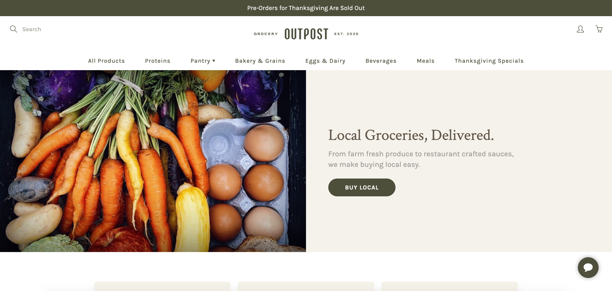
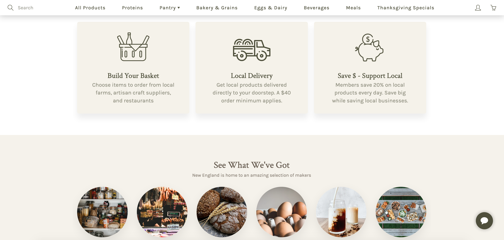
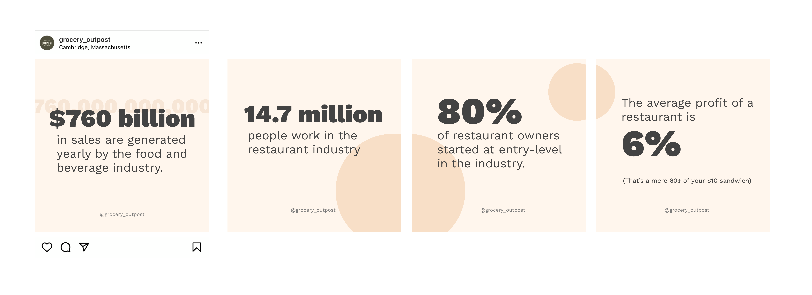
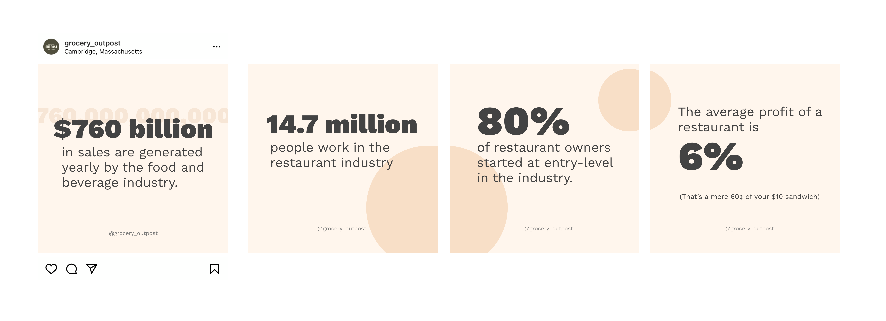

Grocery Outpost was a startup launched during the COVID-19 pandemic to make local goods more accessible and to provide revenue for struggling restaurants and small businesses in the Greater Boston Area.
I was responsible for the overall online presence of Grocery Outpost. I built the website in Shopify and handled the newsletter in MailChimp and social media posts, primarily Instagram. I was also highly involved in the stategy of the company and I worked closely with restaurants and brands on the platform.
Over the course of the six months I worked with Grocery Outpost the website changed numerous times as the business developed and adapted to the changing pandemic. I updated the website for each change in Shopify, designing the website to direct people to the information they needed quickly and convert them to customers, as well as maintaining the brand.
 I designed and sent out a weekly newsletter in MailChimp to update subscribers on our offerings, changes, and also to provide recipes and inspiration. The open rate was close to 50% and we were able to convert around 5% to clicks.
I managed the Instagram account for the brand, creating a consistent voice and pushing traffic to the website. I also responded to DMs and tracked insights about engagement.

 



This was my first experience at a small startup where I was able to be deeply involved in all facets of the operation. I was part of brainstorming, research, project management, and marketing, as well as executing logisitcs and orders. I gained experience writing copy for a brand and creating a distinctive and consistent voice as well as managing an active social media account. I learned to use Shopify and MailChimp and most of all I learned how to roll with the punches and adapt to changes in the business.